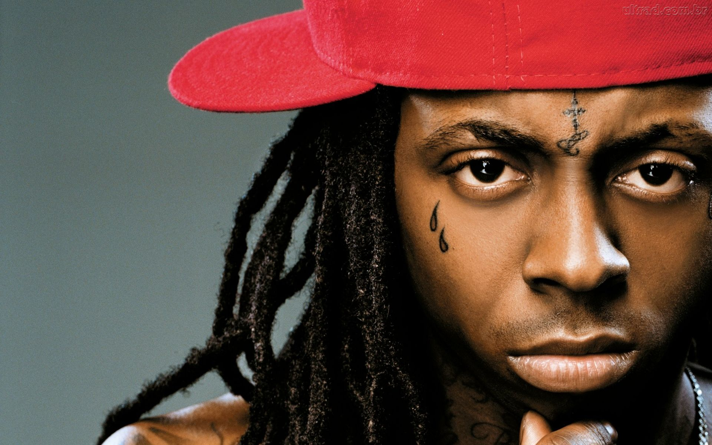

Artifacts
| Above is an ancient hip-hop artifact not many people remember ... his name was Lil Wayne. |
T-Shaped Student
T-Shaped Podcast
T-Shaped Essay
This podcast reflects the T part of the VT-shaped student model through its investigations. In the podcast, the investigator is interested in the T-shaped student concept. While the investigator conducts some research about its general purpose, his understanding is enhanced when he interviews two Virginia Tech students who know all about the criteria of the T-shaped concept. Through the interviews, the investigator begins to understand what makes a student T-shaped at Virginia Tech.
During the first interview, the student mentions classes she is currently taking, including Writing and Editing for PR, PR Cases, and Writing and Digital Media. Any student can take classes – that is what makes one a student. However, it is what she says next that exemplifies the T-shaped concept. The student notes that the exposure to technology is important for liberal arts students. While she acknowledges that liberal arts is not particularly centered on creating websites or engineering, she notes the importance of technology curricula merging with humanistic curricula. At Virginia Tech, students should be familiar with both in order to succeed and create worthwhile content.
The same can be said for the interview between the investigator and a second student. While this student takes classes with a liberal arts focus, she also takes classes with a technology focus. Utilizing both areas, she effectively creates content that can be accessed by a wide variety of audiences. As a T-shaped student at Virginia Tech, she is aware that her skills in content producing should not be aimed at one particular group of people. By using both humanistic curricula and technology curricula, she has become a versatile student with a unique set of skills.
Through out the podcast, the investigator gains more and more knowledge on the T-shaped student. By interviewing students that represent the T-shaped concept at Virginia Tech, the investigator realizes the importance of combining curricula for the benefit of students as well as education as a whole.
V-Shaped Student
V-Shaped Video
V-Shaped Essay
This video reflects the V part of the VT-shaped student model through its emphasis on extracurricular activities. In the video, the professor is selfish; he fails to understand the importance of education outside of the classroom. The professor believes that classes, and classes alone, prepare students for a successful future. As he learns through out the video, this is simply not the case.
The professor is frustrated that his student is employed at the university’s Human Resources department. He is so frustrated that he believes she is wasting her time at the department and not putting enough effort in his class. The student does not even have time to argue her case before the professor kicks her out of his office.
At the HR department, the student’s boss states that they give her hands-on experience she could not receive in the classroom. While the classroom delivers PowerPoint slides and note-taking opportunities, the boss reminds the student that they give her access to InDesign and Hootsuite, as well as an opportunity to create her own PowerPoints for distribution to Virginia Tech employees. As exemplified by the V-shaped concept, students gain unique experiences by interning and serving their communities.
It is not until the student and her boss revisit the professor’s office that he finally understands the importance of internships. While class-facilitated notes, tests, and exams are valuable, there is nothing wrong with students expanding their educational opportunities through internships. By the end, the professor is willing to “share” his student with other organizations, as long as she continues her learning. As the video exemplifies, V-shaped students recognize the value in extracurriculars and actively pursue them in an attempt to gain as much knowledge as possible while still giving back to society.